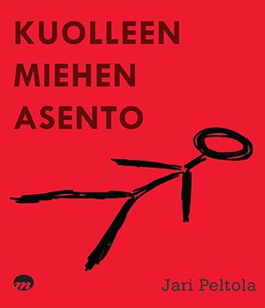

Yhteys
Kotisivuiltani löytyy runsaasti materiaalia aiemmista tekemisistäni. Tekstin lisäksi sivusto sisältää myös musiikkia ja videoita.
KOTISIVUILLENI
KOTISIVUILLENI
Kuolleen miehen asento on Jääveden kaupunkiin sijoittuva jännitysromaani, jonka päähenkilö on vanhempi rikoskonstaapeli Taina Laaksonen.
LUe LISÄÄ
LUe LISÄÄ
Kuolleen miehen asennon kustantaja on uuden ajan suomalainen kustannusyhtiö, joka julkaisee myös digitaalisia sisältöjä.
VERKKOKAUPPAAN
VERKKOKAUPPAAN